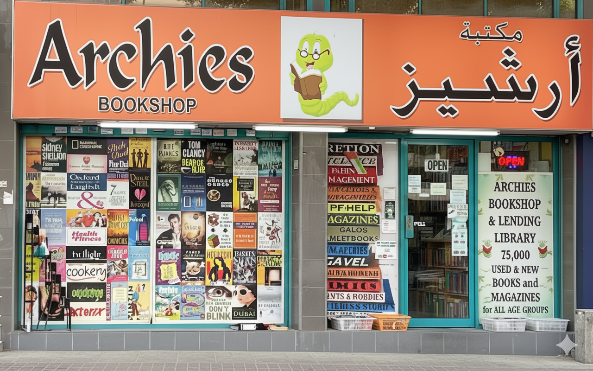
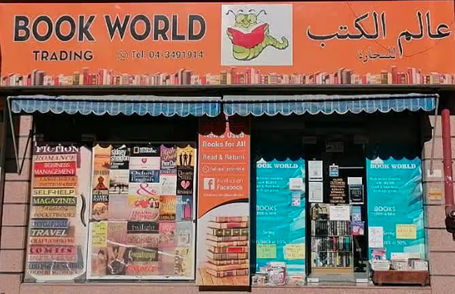

Keeping Dubai’s love of reading alive since 1994
Archies Bookshop & Lending Library is more than a place to buy or borrow books. It is a community space where readers, students, families and long-time Dubai residents continue to discover stories, knowledge and memories.
Mr. Bhisham Sainani & Mrs. Leena Sainani
Archies was founded and nurtured by Mr. Bhisham Sainani together with his wife Mrs. Leena Sainani. Their shared love for books shaped Archies into one of Dubai’s most respected community bookshops and lending libraries.
Mr. Bhisham Sainani, originally from Delhi, moved to Dubai in 1979. His passion for books was inspired by his father, who was a school principal. That early respect for reading stayed with him and later became the foundation of Archies.
Alongside Mrs. Leena Sainani, he helped create a welcoming reading culture where books remain affordable and accessible. The couple has continued to serve readers through Archies Bookshop in Karama and Book World in Satwa.
assets/founder-bhisham-leena.png
Bhisham & Leena Sainani
Founders of Archies Bookshop & Lending Library
A community bookshop with a unique reading model
Archies is known for its reader-friendly model. Customers can buy books at reasonable prices and return them after reading. This approach has helped generations of readers enjoy books without making reading expensive.
The stores carry a wide range of titles: fiction, classics, school books, children’s literature, comics, self-help, business, cookery, travel, magazines, rare editions and out-of-print books. The charm of Archies lies in the joy of browsing and finding something unexpected.
Many customers who visited Archies decades ago now bring their own children. This makes Archies not just a bookstore, but a multigenerational part of Dubai’s cultural memory.
Archies Journey
Arrival in Dubai
Mr. Bhisham Sainani moved to Dubai, carrying with him a lifelong love for books and learning.
Archies begins
Archies Bookshop opened in Karama and became a trusted destination for readers.
Book World Satwa
Bhisham and Leena launched Book World in Satwa, expanding their community reading mission.
Full-time dedication
After retirement, the couple dedicated themselves fully to managing the two bookshops.
Still serving readers
Archies continues to serve families, students and book lovers across Dubai.
Khaleej Times
Archies and Book World were featured by Khaleej Times in a story about Dubai’s 30-year-old community bookshops and their unique buy-back reading culture.
Read ArticleOur Branches
Visit Archies Bookshop in Karama or Book World in Satwa to explore thousands of books across genres, languages and age groups.

Archies Bookshop - Karama

Book World - Satwa
Our Vision
As Archies moves into the digital era, the goal remains the same: to keep books affordable, accessible and loved. The future website will help members search books, manage memberships, track reading history and eventually request home delivery and returns.
Browse Catalogue